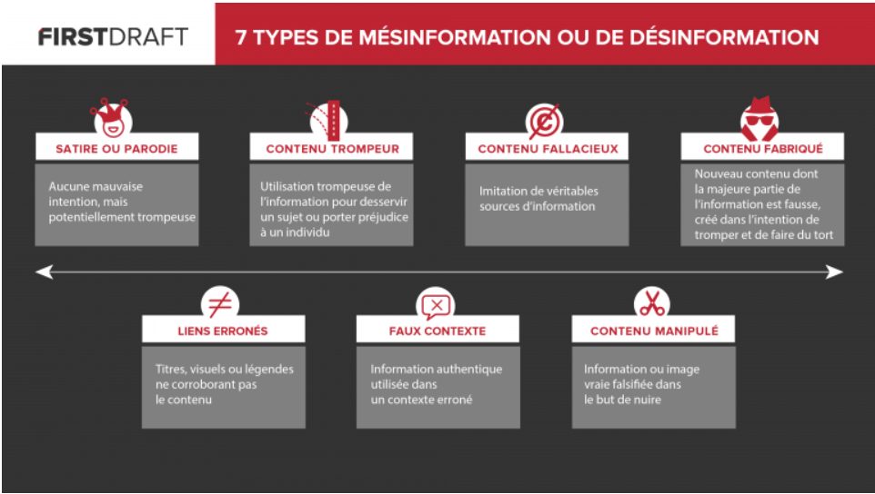

Internet est un réseau mondial, reliant tous les continents entre eux. Il possède des millions de serveurs interconnectés
et des milliards de sites. C'est un outil devenu indispensable pour nous. Cet outil a révolutionné le monde grâce à ses
capacités sans précédent. Il a une capacité de diffusion et de distribution de l'information dans le monde entier et aussi
un moyen de collaboration et d'interaction entre les individus et leurs ordinateurs. Et cela, peu importe l'emplacement
géographique.
Internet est avant tout une infrastructure informatique généralisée, utilisant le protocole réseau TCP/IP. Largement
adopté par notre société, son influence touche de nombreux domaines (techniques, communication, etc.). Son histoire est
tellement longue et complexe que les documents ayant été utilisés pour cet article seront disponibles en fin de page, dans la section sources.
La désinformation consiste à diffuser de fausses informations, souvent appuyées par des images pour rendre leurs
propos plus solides. Elles sont généralement réalisées de manière volontaire. Les fake news sont créées dans
le but de nous tromper.
Prenons par exemple le site Nordpresse.be qui reprend les faits-divers de certains journaux pour les modifier.
Même si c'est avant tout pour faire de l'humour, certaines personnes croient ces informations déformées. Et participe
donc à la désinformation en partageant ces infos.
Il existe plusieurs types de fake news en fonction du degré de tromperie :
Les personnes publiant ces articles ou sites ne le font pas sans raisons. Que ce soit pour la parodie, le fait de provoquer les lecteurs ou même pour faire de la propagande politique. Ce qui compte, c'est que l'information soit partagée en masse et qu'on en parle partout, qu'on aille visiter la page et que les auteurs se fassent de l'argent avec les pubs.
Ces articles sont souvent accompagnés d'un titre racoleur, qui attire et qui donne envie d'aller voir de quoi il s'agit. Mais aussi d'images choquantes pour marquer les esprits des lecteurs et ainsi faciliter voire inciter le partage, pour que d'autres aillent voir l'article et qu'eux aussi partagent l'info, et ainsi de suite.
Les fausses informations deviennent de plus en plus fréquentes sur Internet, et de plus en plus de gens tombent dans le panneau. Par exemple, d'après une enquête réalisée par Le Monde, sur un échantillon de 1198 pages suivies par au moins 100 000 personnes sur Facebook, 3000 posts diffusant 137 informations mensongères ont été identifiées, chacun a été partagé des milliers de fois.
Pour vérifier une information, il faut se poser quelques questions simples, et si la réponse à une de ces questions n'est pas assez claire, alors l'information a plus de chance d'être non fiable que le contraire.
Vous l'aurez compris, il faut faire appel à son esprit critique afin d'être capable de différencier une intox ou une rumeur d'une info réelle basée sur des faits avérés et vérifiables (témoignages, chiffres, études, sources, etc.).
S'agit-il d'un média reconnu ? D'une source d'information officielle (comme l'AFP) ? Ou à contrario, l'auteur est non-identifié et le site ainsi que ces sources sont inconnus ?
Aujourd'hui, avec la démultiplication des pages d'intox, il existe maintenant ce qu'on appelle des annuaires chargés de répertorier les sites clairement identifiés comme producteurs et diffuseurs de fake news. Il est très important de toujours vérifier la source d'une information, que ce soit pour un travail, ou juste pour s'informer. Une information sortie de son contexte peut parfois prendre une autre signification et ainsi s'avérer dangereuse !
Pour beaucoup de lecteurs, une photo ou une image constitue une preuve suffisante de fiabilité d'une information. Mais il faut savoir qu'elles peuvent facilement être sorties de leurs contextes et être manipulées pour vous manipuler par la suite. De plus il est très facile de les truquer via des logiciels de retouche puissants et parfois gratuits.
Pour vous prouver cela, je vais vous montrer un exemple :
L'image de gauche date des attentats du 13 novembre 2015 à Paris, elle montre l'Empire State Building au couleur de la France, pour les soutenir suite à l'attentat. L'image de droite, prise par un correspondant de BFM, affirme que l'antenne de l'Empire State Building n'était pas du tout au couleur de la France, contrairement à ce qui était dit.
Il existe de nombreuses façons d'éviter les fausses informations, comme la recherche inversée, permettant de retrouver les origines d'une image. Mais une solution plus rapide existe : l'installation d'un plugin sur son navigateur.
Il y a de nombreux plugins pour navigateurs, répertoriant le sites fiables et ceux qui ne le sont pas. En voici deux :